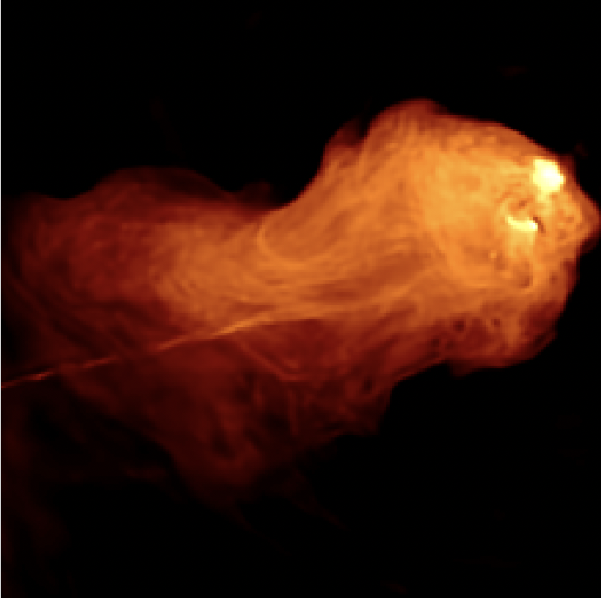
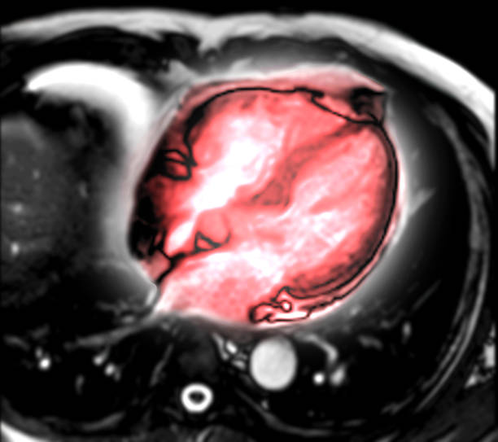
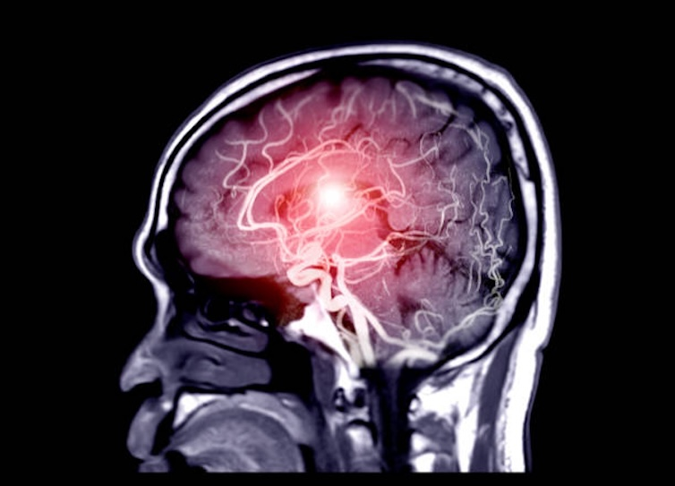

BASPLib is an open-source library on GitHub, gathering Python and Matlab codes to solve challenging inverse imaging problems in astronomy and medicine. The primary imaging modality of focus is radio interferometry (RI) in radio astronomy, with functionality currently being developed for magnetic resonance imaging (MRI) and ultrasound imaging in medicine.
The BASPLib software suite gathers implementations of the most advanced computational imaging algorithms at the interface of optimisation and deep learning theories. The proposed algorithms can be seen as intermediate steps in the quest for an ultimate "intelligent" imaging algorithm (yet to be devised!) providing the joint precision, robustness, efficiency, and scalability required by modern applications. A key feature on this path is algorithm modularity, with regularisation modules (enforcing image and calibration models) alternating with data-fidelity modules (enforcing consistency with the observed data).



BASPLib algorithms and software are developed at Edinburgh's Biomedical and Astronomical Signal Processing Laboratory (BASP), headed by Prof. Wiaux. The library has emerged from previous software developments led by BASP: the early optimisation code Purify (whose name echoes the CLEAN algorithm), and its Puri-Psi upgrade (-Psi standing for "Parallel Scalable Imaging") featuring first deep learning developments.
If you use BASPLib, please cite the library's URL together with relevant publications (see algorithm-specific pages). BASPLib code is provided under GNU general public licenses (please refer to the GitHub repository of individual algorithms for details).